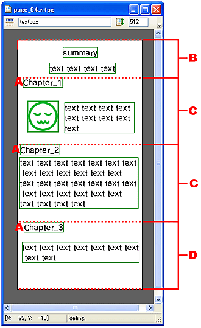
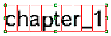
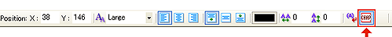

ページ内項目を設定してページを分割できます。
ページ内項目は、テキストオブジェクトに設定します。
※ページ内項目は、１ページ最大７個までしか設定できません、８個め以降は無効となります。
ページ内項目を設定しておくと、ページ内項目から次のページ内項目までの間を切り出しますので、
プレビュー時のビューア上ではページ内項目以下を、１つの独立したページとして扱うことが出来ます。
|  |
|
ページ内項目に設定したいテキストオブジェクトを選択します。

テキストツールバーのページ内項目設定ボタンをONにして、選択したテキストオブジェクトをページ内項目に設定します。

ページ内項目を設定したページを実機でプレビューすると、実機の目次左側にページ内項目のボタンが表示されるようになります。